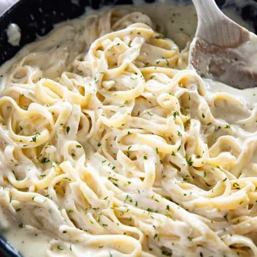

Best Homemade Alfredo Sauce

Description
Best Homemade Alfredo Sauce is rich, creamy, and packed with garlic parmesan flavor! This Alfredo Sauce is easy to make and perfect with your favorite pasta!
-Nichole
Ingredients
- 1/2 Cup Butter
- 1 ½ Cups Heavy Whipping Cream
- 2 tsp Garlic Minced
- 1/2 tsp Italian Seasoning
- 1/2 tsp Salt
- 1/4 tsp Pepper
- 2 Cups Freshly Grated Parmesan Cheese
Steps
- Add the butter and cream to a large skillet.
- Simmer over low heat for 2 minutes.
- Whisk in the garlic, Italian seasoning, salt, and pepper for one minute.
- Whisk in the parmesan cheese until melted.
- Serve immediately.